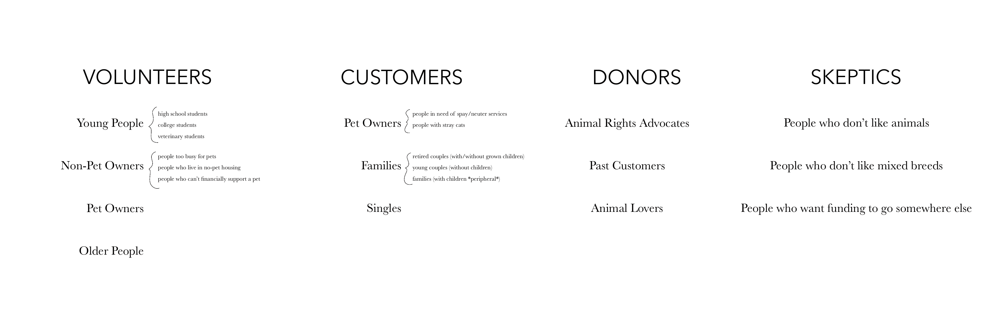

Goals
This section will address the audience and goals of the client website.
Audience
Defining an audience for an animal shelter actually proved to be more difficult than I imagined. After goign through the sticky note assignment I realized that while I had an idea of all the people who might use this facility, I still didn't have a clue the "specific audience" that I was supposed to address. I broke up my audience into four categories: volunteers, customers, donors, and sceptics.
Why does this site need to exist?
- Inform community of PAWS services
- Provide information about available animals
Are there specific metrics that your client wants?
- More adoptions & foster opportunities
- More donations & funding
- More volunteers
Site Impact
- Fulfill a need: more donations, volunteers, & customers
- Spread an idea: inform public of services
- Support a goal: save more animals (P.A.W.S.)
- Solve a problem: more adoptions leads to less stray animals
- Make someone happy: duh
Site Format
- Service
- Lesson
- Sales
Visitor's Prompts
- Pursuit of a goal: wanting to adopt an animal
- Certain life events: seeing someone else with an animal, moving out, loss of a loved one or pet, etc.